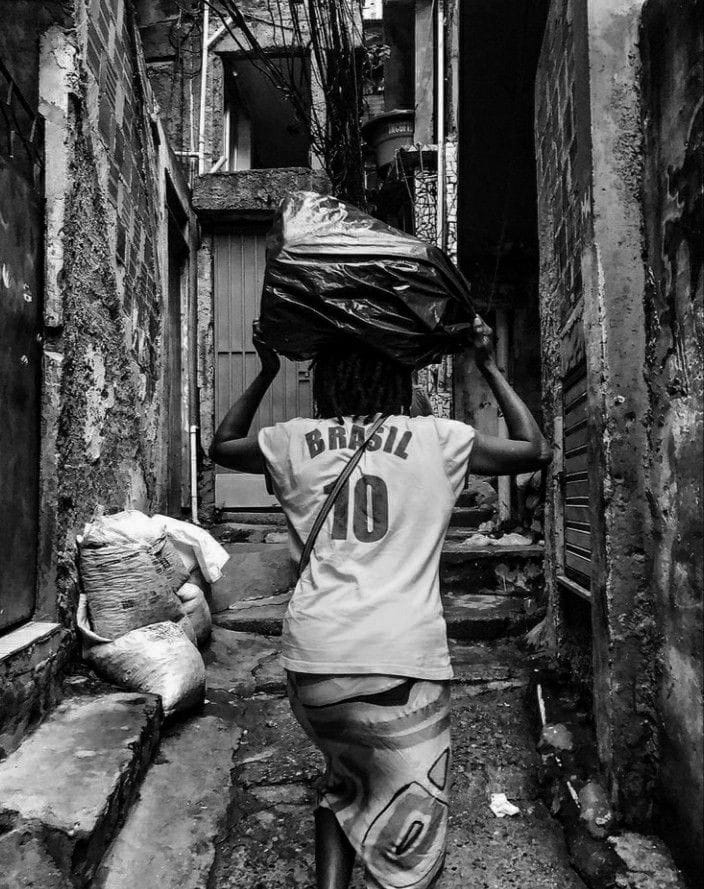

A desigualdade começa cedo.
Entender as causas é o primeiro passo para quebrar o ciclo.
Como o ciclo funciona
- Renda baixa na família. Muitos jovens precisam trabalhar cedo para ajudar em casa.
- Escola com menos estrutura. Falta de professores, material e transporte aumenta o abandono.
- Pouca experiência e contatos. Sem indicação ou currículo, o primeiro emprego demora.
- Trabalho informal e precário. Sem carteira, sem direitos e sem tempo para estudar.
- O ciclo se repete na geração seguinte, a não ser que alguém tenha acesso a uma oportunidade.
Quem é mais afetado
Jovens negros
Enfrentam racismo na escola, na seleção de vagas e na abordagem policial.
Periferias
Moram longe de centros de estudo e trabalho e gastam horas no transporte.
Mulheres jovens
Acumulam estudo, trabalho e cuidado da casa, e muitas engravidam sem rede de apoio.
LGBTQIA+ e PCD
Sofrem preconceito e falta de acessibilidade em escolas e empresas.

O que dá para fazer
- Buscar cursos gratuitos e qualificação técnica.
- Entrar como jovem aprendiz ou estagiário.
- Participar de grêmios, coletivos e conselhos de juventude.
- Conhecer seus direitos (ECA e Estatuto da Juventude).
- Compartilhar informação com quem está perto de você.